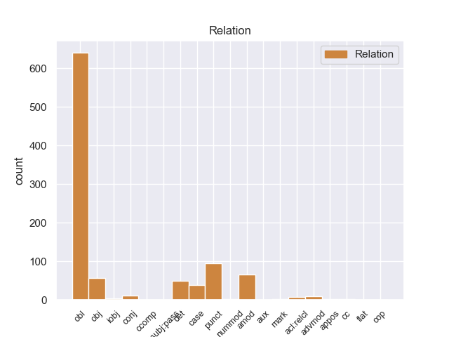
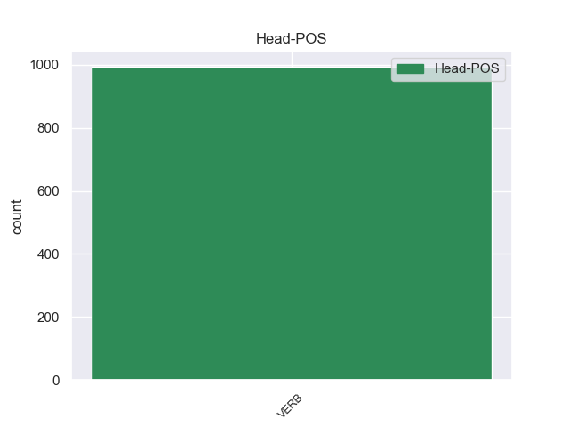
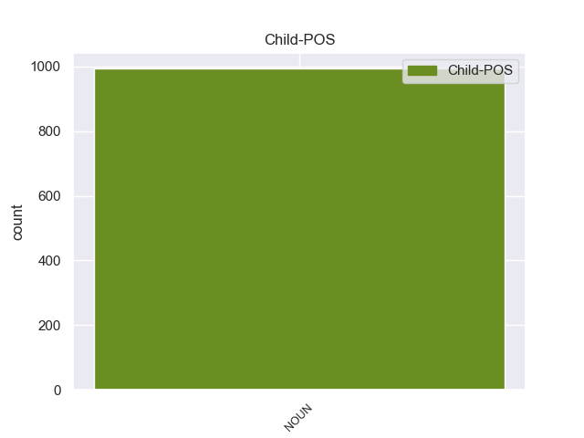

Distribution of features within this leaf



Agreement Rules sorted by frequency.
- When the dependent token is the oblique nominal(obl) of the head token, and the head token is VERB and the dependent token is NOUN.
1 Una _ _ _ _ 0 _ _ _
2 vez _ _ _ _ 0 _ _ _
3 que _ _ _ _ 0 _ _ _
4 el _ _ _ _ 0 _ _ _
5 Hijo hijo NOUN _ Gender=Masc|Number=Sing 14 obl _ _
6 de _ _ _ _ 0 _ _ _
7 Krypton _ _ _ _ 0 _ _ _
8 suelta _ _ _ _ 0 _ _ _
9 el _ _ _ _ 0 _ _ _
10 misil _ _ _ _ 0 _ _ _
11 , _ _ _ _ 0 _ _ _
12 este _ _ _ _ 0 _ _ _
13 intenta _ _ _ _ 0 _ _ _
14 huir huir VERB _ Gender=Masc|Number=Sing 0 _ _ _
15 de _ _ _ _ 0 _ _ _
16 el _ _ _ _ 0 _ _ _
17 lugar _ _ _ _ 0 _ _ _
18 pero _ _ _ _ 0 _ _ _
19 es _ _ _ _ 0 _ _ _
20 atrapado _ _ _ _ 0 _ _ _
21 en _ _ _ _ 0 _ _ _
22 la _ _ _ _ 0 _ _ _
23 explosión _ _ _ _ 0 _ _ _
24 . _ _ _ _ 0 _ _ _
1 En _ _ _ _ 0 _ _ _
2 1991 _ _ _ _ 0 _ _ _
3 , _ _ _ _ 0 _ _ _
4 como _ _ _ _ 0 _ _ _
5 ya _ _ _ _ 0 _ _ _
6 está _ _ _ _ 0 _ _ _
7 indicado indicado VERB _ Gender=Masc|Number=Sing 0 _ _ _
8 en _ _ _ _ 0 _ _ _
9 el _ _ _ _ 0 _ _ _
10 párrafo _ _ _ _ 0 _ _ _
11 anterior _ _ _ _ 0 _ _ _
12 , _ _ _ _ 0 _ _ _
13 se _ _ _ _ 0 _ _ _
14 creó _ _ _ _ 0 _ _ _
15 un _ _ _ _ 0 _ _ _
16 equipo _ _ _ _ 0 _ _ _
17 ad _ _ _ _ 0 _ _ _
18 hoc hoc NOUN _ Gender=Masc|Number=Sing 7 punct _ _
19 para _ _ _ _ 0 _ _ _
20 averiguar _ _ _ _ 0 _ _ _
21 como _ _ _ _ 0 _ _ _
22 se _ _ _ _ 0 _ _ _
23 podía _ _ _ _ 0 _ _ _
24 desarrollar _ _ _ _ 0 _ _ _
25 el _ _ _ _ 0 _ _ _
26 Dialogo _ _ _ _ 0 _ _ _
27 Social _ _ _ _ 0 _ _ _
28 , _ _ _ _ 0 _ _ _
29 este _ _ _ _ 0 _ _ _
30 equipo _ _ _ _ 0 _ _ _
31 estaba _ _ _ _ 0 _ _ _
32 formado _ _ _ _ 0 _ _ _
33 por _ _ _ _ 0 _ _ _
34 representantes _ _ _ _ 0 _ _ _
35 de _ _ _ _ 0 _ _ _
36 todas _ _ _ _ 0 _ _ _
37 las _ _ _ _ 0 _ _ _
38 organizaciones _ _ _ _ 0 _ _ _
39 relacionadas _ _ _ _ 0 _ _ _
40 con _ _ _ _ 0 _ _ _
41 CES _ _ _ _ 0 _ _ _
42 , _ _ _ _ 0 _ _ _
43 UNICE _ _ _ _ 0 _ _ _
44 y _ _ _ _ 0 _ _ _
45 CEEP _ _ _ _ 0 _ _ _
46 ; _ _ _ _ 0 _ _ _
1 La _ _ _ _ 0 _ _ _
2 Cabeza _ _ _ _ 0 _ _ _
3 Mediana _ _ _ _ 0 _ _ _
4 se _ _ _ _ 0 _ _ _
5 halla _ _ _ _ 0 _ _ _
6 a _ _ _ _ 0 _ _ _
7 el _ _ _ _ 0 _ _ _
8 norte _ _ _ _ 0 _ _ _
9 de _ _ _ _ 0 _ _ _
10 el _ _ _ _ 0 _ _ _
11 arroyo _ _ _ _ 0 _ _ _
12 de _ _ _ _ 0 _ _ _
13 Angostura _ _ _ _ 0 _ _ _
14 , _ _ _ _ 0 _ _ _
15 una _ _ _ _ 0 _ _ _
16 de _ _ _ _ 0 _ _ _
17 las _ _ _ _ 0 _ _ _
18 corrientes _ _ _ _ 0 _ _ _
19 fluviales _ _ _ _ 0 _ _ _
20 que _ _ _ _ 0 _ _ _
21 forman _ _ _ _ 0 _ _ _
22 el _ _ _ _ 0 _ _ _
23 río _ _ _ _ 0 _ _ _
24 Lozoya _ _ _ _ 0 _ _ _
25 , _ _ _ _ 0 _ _ _
26 y _ _ _ _ 0 _ _ _
27 a _ _ _ _ 0 _ _ _
28 el _ _ _ _ 0 _ _ _
29 sur _ _ _ _ 0 _ _ _
30 de _ _ _ _ 0 _ _ _
31 el _ _ _ _ 0 _ _ _
32 Monasterio monasterio NOUN _ Gender=Fem|Number=Sing 41 amod _ _
33 de _ _ _ _ 0 _ _ _
34 El _ _ _ _ 0 _ _ _
35 Paular _ _ _ _ 0 _ _ _
36 , _ _ _ _ 0 _ _ _
37 de _ _ _ _ 0 _ _ _
38 el _ _ _ _ 0 _ _ _
39 que _ _ _ _ 0 _ _ _
40 le _ _ _ _ 0 _ _ _
41 separan separan VERB _ Gender=Masc|Number=Sing 0 _ _ _
42 unos _ _ _ _ 0 _ _ _
43 cinco _ _ _ _ 0 _ _ _
44 kilómetros _ _ _ _ 0 _ _ _
45 . _ _ _ _ 0 _ _ _
1 El _ _ _ _ 0 _ _ _
2 Audi audi VERB _ Gender=Masc|Number=Sing 0 _ _ _
3 A3 _ _ _ _ 0 _ _ _
4 es _ _ _ _ 0 _ _ _
5 un _ _ _ _ 0 _ _ _
6 automóvil _ _ _ _ 0 _ _ _
7 de _ _ _ _ 0 _ _ _
8 el _ _ _ _ 0 _ _ _
9 segmento segmento NOUN _ Gender=Masc|Number=Sing 2 det _ _
10 C _ _ _ _ 0 _ _ _
11 producido _ _ _ _ 0 _ _ _
12 por _ _ _ _ 0 _ _ _
13 el _ _ _ _ 0 _ _ _
14 fabricante _ _ _ _ 0 _ _ _
15 alemán _ _ _ _ 0 _ _ _
16 Audi _ _ _ _ 0 _ _ _
17 desde _ _ _ _ 0 _ _ _
18 1996 _ _ _ _ 0 _ _ _
19 . _ _ _ _ 0 _ _ _
1 Israel _ _ _ _ 0 _ _ _
2 extiende extiende VERB _ Gender=Masc|Number=Sing 0 _ _ _
3 sus _ _ _ _ 0 _ _ _
4 dominios dominios NOUN _ Gender=Masc|Number=Sing 2 obj _ _
5 en _ _ _ _ 0 _ _ _
6 el _ _ _ _ 0 _ _ _
7 Levante _ _ _ _ 0 _ _ _
8 derrotando _ _ _ _ 0 _ _ _
9 a _ _ _ _ 0 _ _ _
10 amonitas _ _ _ _ 0 _ _ _
11 y _ _ _ _ 0 _ _ _
12 arameos _ _ _ _ 0 _ _ _
13 , _ _ _ _ 0 _ _ _
14 llegando _ _ _ _ 0 _ _ _
15 hasta _ _ _ _ 0 _ _ _
16 Damasco _ _ _ _ 0 _ _ _
17 . _ _ _ _ 0 _ _ _
1 La _ _ _ _ 0 _ _ _
2 idea _ _ _ _ 0 _ _ _
3 inicial _ _ _ _ 0 _ _ _
4 de _ _ _ _ 0 _ _ _
5 este _ _ _ _ 0 _ _ _
6 tercer _ _ _ _ 0 _ _ _
7 libro _ _ _ _ 0 _ _ _
8 era _ _ _ _ 0 _ _ _
9 hacer _ _ _ _ 0 _ _ _
10 una _ _ _ _ 0 _ _ _
11 obra obra NOUN _ Gender=Masc|Number=Sing 43 case _ _
12 " _ _ _ _ 0 _ _ _
13 para _ _ _ _ 0 _ _ _
14 compartir _ _ _ _ 0 _ _ _
15 con _ _ _ _ 0 _ _ _
16 los _ _ _ _ 0 _ _ _
17 colegas _ _ _ _ 0 _ _ _
18 de _ _ _ _ 0 _ _ _
19 profesión _ _ _ _ 0 _ _ _
20 " _ _ _ _ 0 _ _ _
21 , _ _ _ _ 0 _ _ _
22 y _ _ _ _ 0 _ _ _
23 de _ _ _ _ 0 _ _ _
24 ahí _ _ _ _ 0 _ _ _
25 que _ _ _ _ 0 _ _ _
26 en _ _ _ _ 0 _ _ _
27 las _ _ _ _ 0 _ _ _
28 cantidades _ _ _ _ 0 _ _ _
29 de _ _ _ _ 0 _ _ _
30 los _ _ _ _ 0 _ _ _
31 ingredientes _ _ _ _ 0 _ _ _
32 se _ _ _ _ 0 _ _ _
33 incluya _ _ _ _ 0 _ _ _
34 la _ _ _ _ 0 _ _ _
35 versión _ _ _ _ 0 _ _ _
36 para _ _ _ _ 0 _ _ _
37 75 _ _ _ _ 0 _ _ _
38 comensales _ _ _ _ 0 _ _ _
39 , _ _ _ _ 0 _ _ _
40 pero _ _ _ _ 0 _ _ _
41 luego _ _ _ _ 0 _ _ _
42 se _ _ _ _ 0 _ _ _
43 cambió cambió VERB _ Gender=Masc|Number=Sing 0 _ _ _
44 a _ _ _ _ 0 _ _ _
45 la _ _ _ _ 0 _ _ _
46 dimensión _ _ _ _ 0 _ _ _
47 familiar _ _ _ _ 0 _ _ _
48 ( _ _ _ _ 0 _ _ _
49 2 _ _ _ _ 0 _ _ _
50 y _ _ _ _ 0 _ _ _
51 6 _ _ _ _ 0 _ _ _
52 personas _ _ _ _ 0 _ _ _
53 ) _ _ _ _ 0 _ _ _
54 . _ _ _ _ 0 _ _ _
1 Pascual _ _ _ _ 0 _ _ _
2 en _ _ _ _ 0 _ _ _
3 complicidad _ _ _ _ 0 _ _ _
4 con _ _ _ _ 0 _ _ _
5 Magnolia _ _ _ _ 0 _ _ _
6 le _ _ _ _ 0 _ _ _
7 roba roba VERB _ Gender=Masc|Number=Sing 0 _ _ _
8 el _ _ _ _ 0 _ _ _
9 dinero _ _ _ _ 0 _ _ _
10 a _ _ _ _ 0 _ _ _
11 Tomás _ _ _ _ 0 _ _ _
12 , _ _ _ _ 0 _ _ _
13 y _ _ _ _ 0 _ _ _
14 éste _ _ _ _ 0 _ _ _
15 toma _ _ _ _ 0 _ _ _
16 venganza _ _ _ _ 0 _ _ _
17 robándo _ _ _ _ 0 _ _ _
18 le _ _ _ _ 0 _ _ _
19 botones _ _ _ _ 0 _ _ _
20 de _ _ _ _ 0 _ _ _
21 oro _ _ _ _ 0 _ _ _
22 a _ _ _ _ 0 _ _ _
23 Pascual _ _ _ _ 0 _ _ _
24 y _ _ _ _ 0 _ _ _
25 vendiéndo _ _ _ _ 0 _ _ _
26 los _ _ _ _ 0 _ _ _
27 en _ _ _ _ 0 _ _ _
28 una _ _ _ _ 0 _ _ _
29 compraventa compraventa NOUN _ Gender=Masc|Number=Sing 7 conj _ _
30 . _ _ _ _ 0 _ _ _
1 Esta _ _ _ _ 0 _ _ _
2 se _ _ _ _ 0 _ _ _
3 hizo _ _ _ _ 0 _ _ _
4 la _ _ _ _ 0 _ _ _
5 parte _ _ _ _ 0 _ _ _
6 de _ _ _ _ 0 _ _ _
7 el _ _ _ _ 0 _ _ _
8 Decapolis _ _ _ _ 0 _ _ _
9 y _ _ _ _ 0 _ _ _
10 se _ _ _ _ 0 _ _ _
11 puso puso VERB _ Gender=Masc|Number=Sing 0 _ _ _
12 cada _ _ _ _ 0 _ _ _
13 vez _ _ _ _ 0 _ _ _
14 más más NOUN _ Gender=Masc|Number=Sing 11 advmod _ _
15 competitiva _ _ _ _ 0 _ _ _
16 con _ _ _ _ 0 _ _ _
17 Petra _ _ _ _ 0 _ _ _
18 la _ _ _ _ 0 _ _ _
19 más _ _ _ _ 0 _ _ _
20 vieja _ _ _ _ 0 _ _ _
21 ciudad _ _ _ _ 0 _ _ _
22 comercial _ _ _ _ 0 _ _ _
23 de _ _ _ _ 0 _ _ _
24 Jordania _ _ _ _ 0 _ _ _
25 . _ _ _ _ 0 _ _ _
1 El _ _ _ _ 0 _ _ _
2 tuvo _ _ _ _ 0 _ _ _
3 el _ _ _ _ 0 _ _ _
4 dominio _ _ _ _ 0 _ _ _
5 de _ _ _ _ 0 _ _ _
6 los _ _ _ _ 0 _ _ _
7 hechos _ _ _ _ 0 _ _ _
8 de _ _ _ _ 0 _ _ _
9 los _ _ _ _ 0 _ _ _
10 que _ _ _ _ 0 _ _ _
11 fue _ _ _ _ 0 _ _ _
12 víctima _ _ _ _ 0 _ _ _
13 Alicia _ _ _ _ 0 _ _ _
14 López _ _ _ _ 0 _ _ _
15 , _ _ _ _ 0 _ _ _
16 dirigía _ _ _ _ 0 _ _ _
17 el _ _ _ _ 0 _ _ _
18 centro _ _ _ _ 0 _ _ _
19 clandestino _ _ _ _ 0 _ _ _
20 de _ _ _ _ 0 _ _ _
21 detención _ _ _ _ 0 _ _ _
22 , _ _ _ _ 0 _ _ _
23 tomaba _ _ _ _ 0 _ _ _
24 las _ _ _ _ 0 _ _ _
25 decisiones _ _ _ _ 0 _ _ _
26 trascendentes _ _ _ _ 0 _ _ _
27 , _ _ _ _ 0 _ _ _
28 dirigía _ _ _ _ 0 _ _ _
29 a _ _ _ _ 0 _ _ _
30 todo _ _ _ _ 0 _ _ _
31 el _ _ _ _ 0 _ _ _
32 personal _ _ _ _ 0 _ _ _
33 policial _ _ _ _ 0 _ _ _
34 y _ _ _ _ 0 _ _ _
35 controlaba controlaba VERB _ Gender=Masc|Number=Sing 0 _ _ _
36 que _ _ _ _ 0 _ _ _
37 se _ _ _ _ 0 _ _ _
38 cumplan _ _ _ _ 0 _ _ _
39 el _ _ _ _ 0 _ _ _
40 plan plan NOUN _ Gender=Masc|Number=Sing 35 acl:relcl _ _
41 sistemático _ _ _ _ 0 _ _ _
42 planificado _ _ _ _ 0 _ _ _
43 por _ _ _ _ 0 _ _ _
44 los _ _ _ _ 0 _ _ _
45 mandos _ _ _ _ 0 _ _ _
46 militares _ _ _ _ 0 _ _ _
47 " _ _ _ _ 0 _ _ _
48 , _ _ _ _ 0 _ _ _
49 agregó _ _ _ _ 0 _ _ _
50 . _ _ _ _ 0 _ _ _
1 Tras _ _ _ _ 0 _ _ _
2 llegar _ _ _ _ 0 _ _ _
3 a _ _ _ _ 0 _ _ _
4 la _ _ _ _ 0 _ _ _
5 estación _ _ _ _ 0 _ _ _
6 , _ _ _ _ 0 _ _ _
7 Ethan _ _ _ _ 0 _ _ _
8 comienza _ _ _ _ 0 _ _ _
9 a _ _ _ _ 0 _ _ _
10 tener _ _ _ _ 0 _ _ _
11 problemas _ _ _ _ 0 _ _ _
12 de _ _ _ _ 0 _ _ _
13 su _ _ _ _ 0 _ _ _
14 ansiedad _ _ _ _ 0 _ _ _
15 a _ _ _ _ 0 _ _ _
16 causa _ _ _ _ 0 _ _ _
17 de _ _ _ _ 0 _ _ _
18 su _ _ _ _ 0 _ _ _
19 agorafobia _ _ _ _ 0 _ _ _
20 , _ _ _ _ 0 _ _ _
21 aunque _ _ _ _ 0 _ _ _
22 logra logra NOUN _ Gender=Masc|Number=Sing 33 iobj _ _
23 superar _ _ _ _ 0 _ _ _
24 la _ _ _ _ 0 _ _ _
25 situación _ _ _ _ 0 _ _ _
26 y _ _ _ _ 0 _ _ _
27 localizar _ _ _ _ 0 _ _ _
28 la _ _ _ _ 0 _ _ _
29 taquilla _ _ _ _ 0 _ _ _
30 , _ _ _ _ 0 _ _ _
31 Ethan _ _ _ _ 0 _ _ _
32 se _ _ _ _ 0 _ _ _
33 marcha marcha VERB _ Gender=Masc|Number=Sing 0 _ _ _
34 a _ _ _ _ 0 _ _ _
35 un _ _ _ _ 0 _ _ _
36 motel _ _ _ _ 0 _ _ _
37 donde _ _ _ _ 0 _ _ _
38 abre _ _ _ _ 0 _ _ _
39 la _ _ _ _ 0 _ _ _
40 caja _ _ _ _ 0 _ _ _
41 , _ _ _ _ 0 _ _ _
42 ahí _ _ _ _ 0 _ _ _
43 hay _ _ _ _ 0 _ _ _
44 una _ _ _ _ 0 _ _ _
45 pistola _ _ _ _ 0 _ _ _
46 , _ _ _ _ 0 _ _ _
47 un _ _ _ _ 0 _ _ _
48 teléfono _ _ _ _ 0 _ _ _
49 móvil _ _ _ _ 0 _ _ _
50 y _ _ _ _ 0 _ _ _
51 una _ _ _ _ 0 _ _ _
52 figura _ _ _ _ 0 _ _ _
53 de _ _ _ _ 0 _ _ _
54 Origami _ _ _ _ 0 _ _ _
55 , _ _ _ _ 0 _ _ _
56 además _ _ _ _ 0 _ _ _
57 de _ _ _ _ 0 _ _ _
58 un _ _ _ _ 0 _ _ _
59 mensaje _ _ _ _ 0 _ _ _
60 en _ _ _ _ 0 _ _ _
61 el _ _ _ _ 0 _ _ _
62 telefóno _ _ _ _ 0 _ _ _
63 donde _ _ _ _ 0 _ _ _
64 pone _ _ _ _ 0 _ _ _
65 " _ _ _ _ 0 _ _ _
66 Hasta _ _ _ _ 0 _ _ _
67 donde _ _ _ _ 0 _ _ _
68 estarías _ _ _ _ 0 _ _ _
69 dispuesto _ _ _ _ 0 _ _ _
70 por _ _ _ _ 0 _ _ _
71 salvar _ _ _ _ 0 _ _ _
72 a _ _ _ _ 0 _ _ _
73 tu _ _ _ _ 0 _ _ _
74 hijo _ _ _ _ 0 _ _ _
75 " _ _ _ _ 0 _ _ _
76 . _ _ _ _ 0 _ _ _
1 Y _ _ _ _ 0 _ _ _
2 si _ _ _ _ 0 _ _ _
3 digo _ _ _ _ 0 _ _ _
4 esto _ _ _ _ 0 _ _ _
5 es _ _ _ _ 0 _ _ _
6 porque _ _ _ _ 0 _ _ _
7 estoy _ _ _ _ 0 _ _ _
8 cansado _ _ _ _ 0 _ _ _
9 de _ _ _ _ 0 _ _ _
10 ver _ _ _ _ 0 _ _ _
11 y _ _ _ _ 0 _ _ _
12 escuchar _ _ _ _ 0 _ _ _
13 a _ _ _ _ 0 _ _ _
14 bloggeros _ _ _ _ 0 _ _ _
15 de _ _ _ _ 0 _ _ _
16 tres _ _ _ _ 0 _ _ _
17 a _ _ _ _ 0 _ _ _
18 el _ _ _ _ 0 _ _ _
19 cuarto _ _ _ _ 0 _ _ _
20 que _ _ _ _ 0 _ _ _
21 no _ _ _ _ 0 _ _ _
22 los _ _ _ _ 0 _ _ _
23 leen _ _ _ _ 0 _ _ _
24 ni _ _ _ _ 0 _ _ _
25 en _ _ _ _ 0 _ _ _
26 su _ _ _ _ 0 _ _ _
27 casa _ _ _ _ 0 _ _ _
28 y _ _ _ _ 0 _ _ _
29 van _ _ _ _ 0 _ _ _
30 de _ _ _ _ 0 _ _ _
31 pequeños _ _ _ _ 0 _ _ _
32 matones _ _ _ _ 0 _ _ _
33 y _ _ _ _ 0 _ _ _
34 de _ _ _ _ 0 _ _ _
35 algunos _ _ _ _ 0 _ _ _
36 periodistas _ _ _ _ 0 _ _ _
37 a _ _ _ _ 0 _ _ _
38 los _ _ _ _ 0 _ _ _
39 que _ _ _ _ 0 _ _ _
40 les _ _ _ _ 0 _ _ _
41 pasa pasa VERB _ Gender=Masc|Number=Sing 0 _ _ _
42 lo _ _ _ _ 0 _ _ _
43 mismo mismo NOUN _ Gender=Masc|Number=Sing 41 mark _ _
44 , _ _ _ _ 0 _ _ _
45 incluso _ _ _ _ 0 _ _ _
46 pueden _ _ _ _ 0 _ _ _
47 presumir _ _ _ _ 0 _ _ _
48 de _ _ _ _ 0 _ _ _
49 comer _ _ _ _ 0 _ _ _
50 gratis _ _ _ _ 0 _ _ _
51 en _ _ _ _ 0 _ _ _
52 los _ _ _ _ 0 _ _ _
53 locales _ _ _ _ 0 _ _ _
54 que _ _ _ _ 0 _ _ _
55 visitan _ _ _ _ 0 _ _ _
56 para _ _ _ _ 0 _ _ _
57 luego _ _ _ _ 0 _ _ _
58 hablar _ _ _ _ 0 _ _ _
59 de _ _ _ _ 0 _ _ _
60 ellos _ _ _ _ 0 _ _ _
61 y _ _ _ _ 0 _ _ _
62 no _ _ _ _ 0 _ _ _
63 siempre _ _ _ _ 0 _ _ _
64 marcando _ _ _ _ 0 _ _ _
65 el _ _ _ _ 0 _ _ _
66 mismo _ _ _ _ 0 _ _ _
67 criterio _ _ _ _ 0 _ _ _
68 para _ _ _ _ 0 _ _ _
69 todos _ _ _ _ 0 _ _ _
70 . _ _ _ _ 0 _ _ _
1 Goatse.cx _ _ _ _ 0 _ _ _
2 o _ _ _ _ 0 _ _ _
3 Goatse.da.ru _ _ _ _ 0 _ _ _
4 ( _ _ _ _ 0 _ _ _
5 pronunciado pronunciado VERB _ Gender=Masc|Number=Sing 0 _ _ _
6 de _ _ _ _ 0 _ _ _
7 varias _ _ _ _ 0 _ _ _
8 maneras _ _ _ _ 0 _ _ _
9 en _ _ _ _ 0 _ _ _
10 inglés _ _ _ _ 0 _ _ _
11 : _ _ _ _ 0 _ _ _
12 " _ _ _ _ 0 _ _ _
13 goat _ _ _ _ 0 _ _ _
14 see _ _ _ _ 0 _ _ _
15 , _ _ _ _ 0 _ _ _
16 " _ _ _ _ 0 _ _ _
17 " _ _ _ _ 0 _ _ _
18 goat _ _ _ _ 0 _ _ _
19 seh _ _ _ _ 0 _ _ _
20 , _ _ _ _ 0 _ _ _
21 " _ _ _ _ 0 _ _ _
22 " _ _ _ _ 0 _ _ _
23 goats _ _ _ _ 0 _ _ _
24 , _ _ _ _ 0 _ _ _
25 " _ _ _ _ 0 _ _ _
26 " _ _ _ _ 0 _ _ _
27 goatsex _ _ _ _ 0 _ _ _
28 , _ _ _ _ 0 _ _ _
29 " _ _ _ _ 0 _ _ _
30 " _ _ _ _ 0 _ _ _
31 goat _ _ _ _ 0 _ _ _
32 say _ _ _ _ 0 _ _ _
33 " _ _ _ _ 0 _ _ _
34 , _ _ _ _ 0 _ _ _
35 o _ _ _ _ 0 _ _ _
36 " _ _ _ _ 0 _ _ _
37 goat _ _ _ _ 0 _ _ _
38 see _ _ _ _ 0 _ _ _
39 dot _ _ _ _ 0 _ _ _
40 cx cx NOUN _ Number=Sing 5 appos _ _
41 " _ _ _ _ 0 _ _ _
42 ) _ _ _ _ 0 _ _ _
43 fue _ _ _ _ 0 _ _ _
44 un _ _ _ _ 0 _ _ _
45 sitio _ _ _ _ 0 _ _ _
46 de _ _ _ _ 0 _ _ _
47 Internet _ _ _ _ 0 _ _ _
48 de _ _ _ _ 0 _ _ _
49 el _ _ _ _ 0 _ _ _
50 tipo _ _ _ _ 0 _ _ _
51 " _ _ _ _ 0 _ _ _
52 Internet _ _ _ _ 0 _ _ _
53 shock _ _ _ _ 0 _ _ _
54 sites _ _ _ _ 0 _ _ _
55 " _ _ _ _ 0 _ _ _
56 que _ _ _ _ 0 _ _ _
57 durante _ _ _ _ 0 _ _ _
58 varios _ _ _ _ 0 _ _ _
59 años _ _ _ _ 0 _ _ _
60 , _ _ _ _ 0 _ _ _
61 desde _ _ _ _ 0 _ _ _
62 1999 _ _ _ _ 0 _ _ _
63 , _ _ _ _ 0 _ _ _
64 conmocionaron _ _ _ _ 0 _ _ _
65 a _ _ _ _ 0 _ _ _
66 la _ _ _ _ 0 _ _ _
67 comunidad _ _ _ _ 0 _ _ _
68 internauta _ _ _ _ 0 _ _ _
69 , _ _ _ _ 0 _ _ _
70 recibiendo _ _ _ _ 0 _ _ _
71 más _ _ _ _ 0 _ _ _
72 visitas _ _ _ _ 0 _ _ _
73 durante _ _ _ _ 0 _ _ _
74 el _ _ _ _ 0 _ _ _
75 año _ _ _ _ 0 _ _ _
76 2004 _ _ _ _ 0 _ _ _
77 . _ _ _ _ 0 _ _ _
1 La _ _ _ _ 0 _ _ _
2 cadena _ _ _ _ 0 _ _ _
3 de _ _ _ _ 0 _ _ _
4 el _ _ _ _ 0 _ _ _
5 fitilo _ _ _ _ 0 _ _ _
6 sirve _ _ _ _ 0 _ _ _
7 para _ _ _ _ 0 _ _ _
8 anclar _ _ _ _ 0 _ _ _
9 la _ _ _ _ 0 _ _ _
10 molécula molécula VERB _ Gender=Masc|Number=Sing 0 _ _ _
11 de _ _ _ _ 0 _ _ _
12 clorofila _ _ _ _ 0 _ _ _
13 en _ _ _ _ 0 _ _ _
14 la _ _ _ _ 0 _ _ _
15 estructura _ _ _ _ 0 _ _ _
16 anfipática _ _ _ _ 0 _ _ _
17 de _ _ _ _ 0 _ _ _
18 los _ _ _ _ 0 _ _ _
19 complejos complejos NOUN _ Gender=Masc|Number=Sing 10 cc _ _
20 moleculares _ _ _ _ 0 _ _ _
21 en _ _ _ _ 0 _ _ _
22 que _ _ _ _ 0 _ _ _
23 residen _ _ _ _ 0 _ _ _
24 las _ _ _ _ 0 _ _ _
25 clorofilas _ _ _ _ 0 _ _ _
26 . _ _ _ _ 0 _ _ _
1 Se _ _ _ _ 0 _ _ _
2 llena llena NOUN _ Gender=Masc|Number=Sing 6 nummod _ _
3 demasiado _ _ _ _ 0 _ _ _
4 y _ _ _ _ 0 _ _ _
5 no _ _ _ _ 0 _ _ _
6 controlan controlan VERB _ Gender=Masc|Number=Sing 0 _ _ _
7 la _ _ _ _ 0 _ _ _
8 cantidad _ _ _ _ 0 _ _ _
9 de _ _ _ _ 0 _ _ _
10 gente _ _ _ _ 0 _ _ _
11 que _ _ _ _ 0 _ _ _
12 entra _ _ _ _ 0 _ _ _
13 , _ _ _ _ 0 _ _ _
14 parecen _ _ _ _ 0 _ _ _
15 muy _ _ _ _ 0 _ _ _
16 avariciosos _ _ _ _ 0 _ _ _
17 y _ _ _ _ 0 _ _ _
18 no _ _ _ _ 0 _ _ _
19 se _ _ _ _ 0 _ _ _
20 puede _ _ _ _ 0 _ _ _
21 ni _ _ _ _ 0 _ _ _
22 estar _ _ _ _ 0 _ _ _
23 . _ _ _ _ 0 _ _ _
1 Sus _ _ _ _ 0 _ _ _
2 instalaciones instalación NOUN _ Gender=Fem|Number=Plur 4 nsubj:pass _ _
3 fueron _ _ _ _ 0 _ _ _
4 adquiridas adquirido VERB _ Gender=Fem|Number=Plur|Tense=Past|VerbForm=Part 0 _ _ _
5 posteriormente _ _ _ _ 0 _ _ _
6 por _ _ _ _ 0 _ _ _
7 Electra _ _ _ _ 0 _ _ _
8 de _ _ _ _ 0 _ _ _
9 Viesgo _ _ _ _ 0 _ _ _
10 que _ _ _ _ 0 _ _ _
11 las _ _ _ _ 0 _ _ _
12 transformó _ _ _ _ 0 _ _ _
13 en _ _ _ _ 0 _ _ _
14 una _ _ _ _ 0 _ _ _
15 central _ _ _ _ 0 _ _ _
16 hidroeléctrica _ _ _ _ 0 _ _ _
17 que _ _ _ _ 0 _ _ _
18 sigue _ _ _ _ 0 _ _ _
19 actualmente _ _ _ _ 0 _ _ _
20 en _ _ _ _ 0 _ _ _
21 funcionamiento _ _ _ _ 0 _ _ _
22 . _ _ _ _ 0 _ _ _
1 El _ _ _ _ 0 _ _ _
2 reinicio reinici NOUN _ Gender=Masc|Number=Sing 7 aux _ _
3 de _ _ _ _ 0 _ _ _
4 la _ _ _ _ 0 _ _ _
5 publicación _ _ _ _ 0 _ _ _
6 se _ _ _ _ 0 _ _ _
7 materializó materializó VERB _ Gender=Masc|Number=Sing 0 _ _ _
8 a _ _ _ _ 0 _ _ _
9 el _ _ _ _ 0 _ _ _
10 parecer _ _ _ _ 0 _ _ _
11 gracias _ _ _ _ 0 _ _ _
12 a _ _ _ _ 0 _ _ _
13 el _ _ _ _ 0 _ _ _
14 impulso _ _ _ _ 0 _ _ _
15 y _ _ _ _ 0 _ _ _
16 dedicación _ _ _ _ 0 _ _ _
17 de _ _ _ _ 0 _ _ _
18 José _ _ _ _ 0 _ _ _
19 María _ _ _ _ 0 _ _ _
20 Peciña _ _ _ _ 0 _ _ _
21 , _ _ _ _ 0 _ _ _
22 pero _ _ _ _ 0 _ _ _
23 su _ _ _ _ 0 _ _ _
24 temprano _ _ _ _ 0 _ _ _
25 fallecimiento _ _ _ _ 0 _ _ _
26 forzó _ _ _ _ 0 _ _ _
27 el _ _ _ _ 0 _ _ _
28 relevo _ _ _ _ 0 _ _ _
29 en _ _ _ _ 0 _ _ _
30 la _ _ _ _ 0 _ _ _
31 dirección _ _ _ _ 0 _ _ _
32 , _ _ _ _ 0 _ _ _
33 que _ _ _ _ 0 _ _ _
34 quedó _ _ _ _ 0 _ _ _
35 en _ _ _ _ 0 _ _ _
36 manos _ _ _ _ 0 _ _ _
37 de _ _ _ _ 0 _ _ _
38 José _ _ _ _ 0 _ _ _
39 Uría _ _ _ _ 0 _ _ _
40 , _ _ _ _ 0 _ _ _
41 desde _ _ _ _ 0 _ _ _
42 1953 _ _ _ _ 0 _ _ _
43 hasta _ _ _ _ 0 _ _ _
44 1967 _ _ _ _ 0 _ _ _
45 . _ _ _ _ 0 _ _ _
1 Por _ _ _ _ 0 _ _ _
2 aquí _ _ _ _ 0 _ _ _
3 pasan _ _ _ _ 0 _ _ _
4 las _ _ _ _ 0 _ _ _
5 más _ _ _ _ 0 _ _ _
6 importantes _ _ _ _ 0 _ _ _
7 rutas _ _ _ _ 0 _ _ _
8 comerciales _ _ _ _ 0 _ _ _
9 desde _ _ _ _ 0 _ _ _
10 la _ _ _ _ 0 _ _ _
11 Europa _ _ _ _ 0 _ _ _
12 meridional _ _ _ _ 0 _ _ _
13 hasta _ _ _ _ 0 _ _ _
14 el _ _ _ _ 0 _ _ _
15 mar _ _ _ _ 0 _ _ _
16 Báltico _ _ _ _ 0 _ _ _
17 , _ _ _ _ 0 _ _ _
18 como _ _ _ _ 0 _ _ _
19 la _ _ _ _ 0 _ _ _
20 Ruta _ _ _ _ 0 _ _ _
21 de _ _ _ _ 0 _ _ _
22 el _ _ _ _ 0 _ _ _
23 ámbar _ _ _ _ 0 _ _ _
24 y _ _ _ _ 0 _ _ _
25 también _ _ _ _ 0 _ _ _
26 rutas _ _ _ _ 0 _ _ _
27 desde _ _ _ _ 0 _ _ _
28 los _ _ _ _ 0 _ _ _
29 Países _ _ _ _ 0 _ _ _
30 Checos _ _ _ _ 0 _ _ _
31 a _ _ _ _ 0 _ _ _
32 la _ _ _ _ 0 _ _ _
33 Silesia silesia VERB _ Gender=Fem|Number=Sing 0 _ _ _
34 Superior _ _ _ _ 0 _ _ _
35 y _ _ _ _ 0 _ _ _
36 Pequeña pequeña NOUN _ Gender=Masc|Number=Sing 33 flat _ _
37 Polonia _ _ _ _ 0 _ _ _
38 . _ _ _ _ 0 _ _ _
1 EN _ _ _ _ 0 _ _ _
2 CUALQUIER _ _ _ _ 0 _ _ _
3 CASO _ _ _ _ 0 _ _ _
4 TODOS _ _ _ _ 0 _ _ _
5 LOS _ _ _ _ 0 _ _ _
6 DERECHOS _ _ _ _ 0 _ _ _
7 RESERVADOS _ _ _ _ 0 _ _ _
8 : _ _ _ _ 0 _ _ _
9 Queda _ _ _ _ 0 _ _ _
10 prohibida _ _ _ _ 0 _ _ _
11 la _ _ _ _ 0 _ _ _
12 reproducción _ _ _ _ 0 _ _ _
13 , _ _ _ _ 0 _ _ _
14 distribución _ _ _ _ 0 _ _ _
15 , _ _ _ _ 0 _ _ _
16 puesta _ _ _ _ 0 _ _ _
17 a _ _ _ _ 0 _ _ _
18 disposición _ _ _ _ 0 _ _ _
19 , _ _ _ _ 0 _ _ _
20 comunicación _ _ _ _ 0 _ _ _
21 pública _ _ _ _ 0 _ _ _
22 y _ _ _ _ 0 _ _ _
23 utilización _ _ _ _ 0 _ _ _
24 , _ _ _ _ 0 _ _ _
25 total _ _ _ _ 0 _ _ _
26 o _ _ _ _ 0 _ _ _
27 parcial _ _ _ _ 0 _ _ _
28 , _ _ _ _ 0 _ _ _
29 de _ _ _ _ 0 _ _ _
30 los _ _ _ _ 0 _ _ _
31 contenidos _ _ _ _ 0 _ _ _
32 de _ _ _ _ 0 _ _ _
33 esta _ _ _ _ 0 _ _ _
34 web _ _ _ _ 0 _ _ _
35 , _ _ _ _ 0 _ _ _
36 en _ _ _ _ 0 _ _ _
37 cualquier _ _ _ _ 0 _ _ _
38 forma _ _ _ _ 0 _ _ _
39 o _ _ _ _ 0 _ _ _
40 modalidad modalidad NOUN _ Gender=Masc|Number=Sing 85 cop _ _
41 , _ _ _ _ 0 _ _ _
42 sin _ _ _ _ 0 _ _ _
43 previa _ _ _ _ 0 _ _ _
44 , _ _ _ _ 0 _ _ _
45 expresa _ _ _ _ 0 _ _ _
46 y _ _ _ _ 0 _ _ _
47 escrita _ _ _ _ 0 _ _ _
48 autorización _ _ _ _ 0 _ _ _
49 , _ _ _ _ 0 _ _ _
50 incluyendo _ _ _ _ 0 _ _ _
51 , _ _ _ _ 0 _ _ _
52 en _ _ _ _ 0 _ _ _
53 particular _ _ _ _ 0 _ _ _
54 , _ _ _ _ 0 _ _ _
55 su _ _ _ _ 0 _ _ _
56 mera _ _ _ _ 0 _ _ _
57 reproducción _ _ _ _ 0 _ _ _
58 y _ _ _ _ 0 _ _ _
59 / _ _ _ _ 0 _ _ _
60 o _ _ _ _ 0 _ _ _
61 puesta _ _ _ _ 0 _ _ _
62 a _ _ _ _ 0 _ _ _
63 disposición _ _ _ _ 0 _ _ _
64 como _ _ _ _ 0 _ _ _
65 resúmenes _ _ _ _ 0 _ _ _
66 , _ _ _ _ 0 _ _ _
67 reseñas _ _ _ _ 0 _ _ _
68 o _ _ _ _ 0 _ _ _
69 revistas _ _ _ _ 0 _ _ _
70 de _ _ _ _ 0 _ _ _
71 prensa _ _ _ _ 0 _ _ _
72 con _ _ _ _ 0 _ _ _
73 fines _ _ _ _ 0 _ _ _
74 comerciales _ _ _ _ 0 _ _ _
75 o _ _ _ _ 0 _ _ _
76 directa _ _ _ _ 0 _ _ _
77 o _ _ _ _ 0 _ _ _
78 indirectamente _ _ _ _ 0 _ _ _
79 lucrativos _ _ _ _ 0 _ _ _
80 , _ _ _ _ 0 _ _ _
81 a _ _ _ _ 0 _ _ _
82 la _ _ _ _ 0 _ _ _
83 que _ _ _ _ 0 _ _ _
84 se _ _ _ _ 0 _ _ _
85 manifiesta manifiesta VERB _ Gender=Masc|Number=Sing 0 _ _ _
86 oposición _ _ _ _ 0 _ _ _
87 expresa _ _ _ _ 0 _ _ _
88 . _ _ _ _ 0 _ _ _
Disagree Examples:
1 Realizó realizar VERB _ Mood=Ind|Number=Sing|Person=3|Tense=Past|VerbForm=Fin 0 _ _ _
2 para _ _ _ _ 0 _ _ _
3 la _ _ _ _ 0 _ _ _
4 iglesia _ _ _ _ 0 _ _ _
5 de _ _ _ _ 0 _ _ _
6 Saint _ _ _ _ 0 _ _ _
7 - _ _ _ _ 0 _ _ _
8 Sulpice _ _ _ _ 0 _ _ _
9 cuatro _ _ _ _ 0 _ _ _
10 estatuas estatua NOUN _ Gender=Fem|Number=Plur 1 obj _ SpaceAfter=No
11 : _ _ _ _ 0 _ _ _
12 San _ _ _ _ 0 _ _ _
13 Pedro _ _ _ _ 0 _ _ _
14 , _ _ _ _ 0 _ _ _
15 San _ _ _ _ 0 _ _ _
16 Pablo _ _ _ _ 0 _ _ _
17 , _ _ _ _ 0 _ _ _
18 San _ _ _ _ 0 _ _ _
19 Juan _ _ _ _ 0 _ _ _
20 y _ _ _ _ 0 _ _ _
21 San _ _ _ _ 0 _ _ _
22 José _ _ _ _ 0 _ _ _
23 . _ _ _ _ 0 _ _ _
1 Jacobo _ _ _ _ 0 _ _ _
2 quiere querer VERB _ Mood=Ind|Number=Sing|Person=3|Tense=Pres|VerbForm=Fin 0 _ _ _
3 nuevos _ _ _ _ 0 _ _ _
4 retos reto NOUN _ Gender=Masc|Number=Plur 2 obj _ _
5 y _ _ _ _ 0 _ _ _
6 en _ _ _ _ 0 _ _ _
7 la _ _ _ _ 0 _ _ _
8 ciudad _ _ _ _ 0 _ _ _
9 aragonesa _ _ _ _ 0 _ _ _
10 tendría _ _ _ _ 0 _ _ _
11 quizás _ _ _ _ 0 _ _ _
12 minutos _ _ _ _ 0 _ _ _
13 para _ _ _ _ 0 _ _ _
14 poder _ _ _ _ 0 _ _ _
15 ir _ _ _ _ 0 _ _ _
16 subiendo _ _ _ _ 0 _ _ _
17 de _ _ _ _ 0 _ _ _
18 nivel _ _ _ _ 0 _ _ _
19 , _ _ _ _ 0 _ _ _
20 ya _ _ _ _ 0 _ _ _
21 que _ _ _ _ 0 _ _ _
22 el _ _ _ _ 0 _ _ _
23 portero _ _ _ _ 0 _ _ _
24 de _ _ _ _ 0 _ _ _
25 Paraguay _ _ _ _ 0 _ _ _
26 Justo _ _ _ _ 0 _ _ _
27 Villar _ _ _ _ 0 _ _ _
28 le _ _ _ _ 0 _ _ _
29 ha _ _ _ _ 0 _ _ _
30 quitado _ _ _ _ 0 _ _ _
31 el _ _ _ _ 0 _ _ _
32 puesto _ _ _ _ 0 _ _ _
33 . _ _ _ _ 0 _ _ _
1 Jacobo _ _ _ _ 0 _ _ _
2 quiere _ _ _ _ 0 _ _ _
3 nuevos _ _ _ _ 0 _ _ _
4 retos _ _ _ _ 0 _ _ _
5 y _ _ _ _ 0 _ _ _
6 en _ _ _ _ 0 _ _ _
7 la _ _ _ _ 0 _ _ _
8 ciudad _ _ _ _ 0 _ _ _
9 aragonesa _ _ _ _ 0 _ _ _
10 tendría tener VERB _ Mood=Cnd|Number=Sing|Person=3|VerbForm=Fin 0 _ _ _
11 quizás _ _ _ _ 0 _ _ _
12 minutos minuto NOUN _ Gender=Masc|Number=Plur 10 obj _ _
13 para _ _ _ _ 0 _ _ _
14 poder _ _ _ _ 0 _ _ _
15 ir _ _ _ _ 0 _ _ _
16 subiendo _ _ _ _ 0 _ _ _
17 de _ _ _ _ 0 _ _ _
18 nivel _ _ _ _ 0 _ _ _
19 , _ _ _ _ 0 _ _ _
20 ya _ _ _ _ 0 _ _ _
21 que _ _ _ _ 0 _ _ _
22 el _ _ _ _ 0 _ _ _
23 portero _ _ _ _ 0 _ _ _
24 de _ _ _ _ 0 _ _ _
25 Paraguay _ _ _ _ 0 _ _ _
26 Justo _ _ _ _ 0 _ _ _
27 Villar _ _ _ _ 0 _ _ _
28 le _ _ _ _ 0 _ _ _
29 ha _ _ _ _ 0 _ _ _
30 quitado _ _ _ _ 0 _ _ _
31 el _ _ _ _ 0 _ _ _
32 puesto _ _ _ _ 0 _ _ _
33 . _ _ _ _ 0 _ _ _
1 Según _ _ _ _ 0 _ _ _
2 el _ _ _ _ 0 _ _ _
3 censo _ _ _ _ 0 _ _ _
4 de _ _ _ _ 0 _ _ _
5 2010 _ _ _ _ 0 _ _ _
6 , _ _ _ _ 0 _ _ _
7 había haber VERB _ Mood=Ind|Number=Sing|Person=3|Tense=Imp|VerbForm=Fin 0 _ _ _
8 672 _ _ _ _ 0 _ _ _
9 personas persona NOUN _ Gender=Fem|Number=Plur 7 obj _ _
10 residiendo _ _ _ _ 0 _ _ _
11 en _ _ _ _ 0 _ _ _
12 el _ _ _ _ 0 _ _ _
13 municipio _ _ _ _ 0 _ _ _
14 de _ _ _ _ 0 _ _ _
15 Montgomery _ _ _ _ 0 _ _ _
16 . _ _ _ _ 0 _ _ _
1 Los _ _ _ _ 0 _ _ _
2 puntos _ _ _ _ 0 _ _ _
3 de _ _ _ _ 0 _ _ _
4 vista _ _ _ _ 0 _ _ _
5 sobre _ _ _ _ 0 _ _ _
6 la _ _ _ _ 0 _ _ _
7 naturaleza _ _ _ _ 0 _ _ _
8 y _ _ _ _ 0 _ _ _
9 severidad _ _ _ _ 0 _ _ _
10 de _ _ _ _ 0 _ _ _
11 los _ _ _ _ 0 _ _ _
12 problemas _ _ _ _ 0 _ _ _
13 con _ _ _ _ 0 _ _ _
14 el _ _ _ _ 0 _ _ _
15 consumo _ _ _ _ 0 _ _ _
16 a _ _ _ _ 0 _ _ _
17 largo _ _ _ _ 0 _ _ _
18 plazo _ _ _ _ 0 _ _ _
19 de _ _ _ _ 0 _ _ _
20 las _ _ _ _ 0 _ _ _
21 benzodiazepinas _ _ _ _ 0 _ _ _
22 varían var VERB _ Mood=Cnd|Number=Plur|Person=3|VerbForm=Fin 0 _ _ _
23 de _ _ _ _ 0 _ _ _
24 un _ _ _ _ 0 _ _ _
25 experto experto NOUN _ Gender=Masc|Number=Sing 22 obl _ _
26 a _ _ _ _ 0 _ _ _
27 otro _ _ _ _ 0 _ _ _
28 , _ _ _ _ 0 _ _ _
29 inclusive _ _ _ _ 0 _ _ _
30 de _ _ _ _ 0 _ _ _
31 un _ _ _ _ 0 _ _ _
32 país _ _ _ _ 0 _ _ _
33 a _ _ _ _ 0 _ _ _
34 otro _ _ _ _ 0 _ _ _
35 , _ _ _ _ 0 _ _ _
36 algunos _ _ _ _ 0 _ _ _
37 expertos _ _ _ _ 0 _ _ _
38 inclusive _ _ _ _ 0 _ _ _
39 cuestionan _ _ _ _ 0 _ _ _
40 si _ _ _ _ 0 _ _ _
41 realmente _ _ _ _ 0 _ _ _
42 hay _ _ _ _ 0 _ _ _
43 algún _ _ _ _ 0 _ _ _
44 problema _ _ _ _ 0 _ _ _
45 con _ _ _ _ 0 _ _ _
46 el _ _ _ _ 0 _ _ _
47 consumo _ _ _ _ 0 _ _ _
48 de _ _ _ _ 0 _ _ _
49 benzodiazepinas _ _ _ _ 0 _ _ _
50 a _ _ _ _ 0 _ _ _
51 largo _ _ _ _ 0 _ _ _
52 plazo _ _ _ _ 0 _ _ _
53 . _ _ _ _ 0 _ _ _